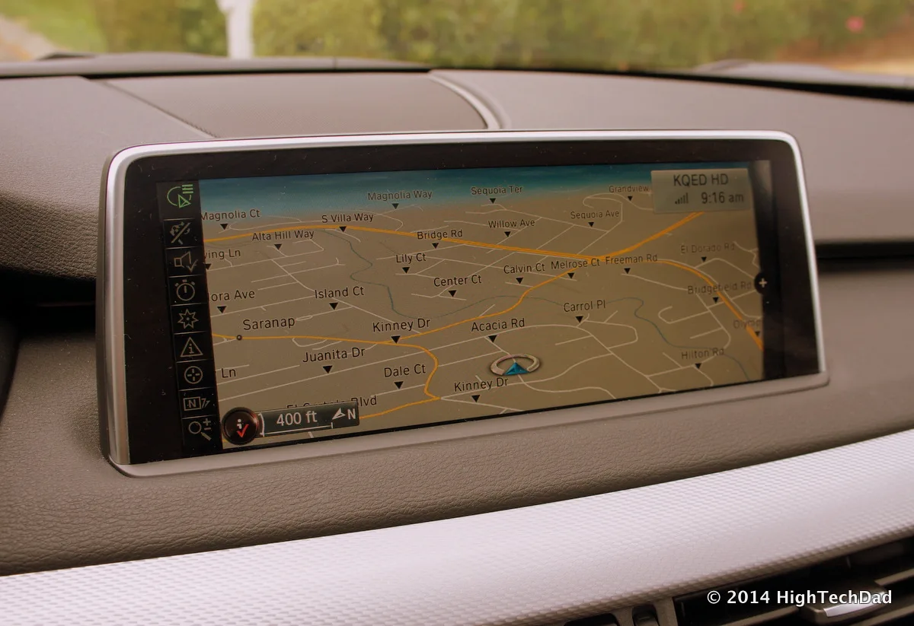
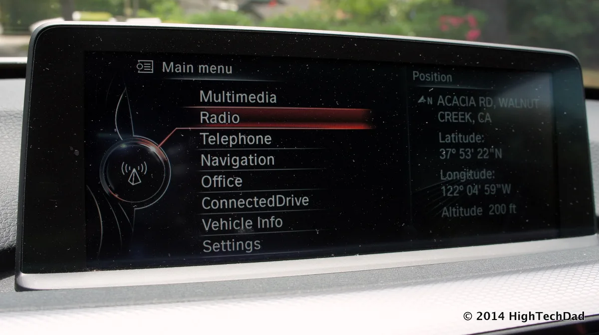

▲ BMW의 기존 내비게이션 지도 화면(구형 iDrive 예시). 10월부터는 이런 2D 지도 대신 내비게이션과 주행보조를 통합한 3D 뷰가 순차 적용된다 ⓒ Wikimedia Commons
BMW가 내비게이션 화면을 다시 그립니다. 목적지까지 가는 길만 보여주던 화면에, 이제 차량 주변 상황과 주행보조 시스템이 무엇을 인식하고 있는지까지 하나의 3D 화면에 겹쳐 보여줍니다.
10월부터 순차 적용되는 'BMW 맵스 위드 드라이버 어시스턴스(BMW Maps with Driver Assistance)' 이야기입니다. 업계에서는 이를 두고 "테슬라식 3D 시각화의 BMW 버전"이라는 평가가 나옵니다.
1. 무엇이 바뀌나 — 통합 3D 뷰
기존 내비게이션은 지도와 주행보조 시스템 화면이 따로 떨어져 있었습니다. 운전자는 내비 화면에서 다음 경로를 확인하고, 계기판에서 별도로 차선유지·크루즈 컨트롤 상태를 확인해야 했습니다.
새 시스템은 이 둘을 하나로 합칩니다. 중앙 디스플레이 하나에서 다음 주행 경로뿐 아니라, 차량이 도로를 어떻게 인식하고 있는지, 어떤 주행보조 기능이 개입하고 있는지를 동시에 보여줍니다. 차량 아이콘은 실제 차선 안 위치와 도로 높이(고가·지하차도 등)까지 반영해 표시됩니다.
| 구분 | 기존 iDrive | BMW 맵스 위드 드라이버 어시스턴스 |
|---|---|---|
| 화면 구성 | 내비게이션·주행보조 화면 분리 | 하나의 3D 화면에 통합 |
| 표시 정보 | 경로·거리 위주 | 경로 + 주변 차량·차선 위치·도로 높이 |
| 활용 구간 | 전 구간 동일 | 고속도로·교차로·시내 상황별 최적화 |
2. 기술 뒤에 있는 파트너십
이번 시스템은 BMW그룹이 자체 개발했지만, 지도 데이터와 매핑 기술은 맵박스(Mapbox)와의 협력을 통해 구현됐습니다.
BMW 디지털 서비스 담당 수석부사장 슈테판 두라흐(Stephan Durach)는 "내비게이션과 주행보조 간의 지능적 상호작용은 고도 자동화 주행으로 가는 중요한 걸음"이라고 밝혔습니다. 맵박스 CEO 피터 시로타(Peter Sirota)는 "운전자는 어느 차선에 있어야 하는지, 그리고 차량 주변에서 일어나는 모든 상황을 정확히 볼 수 있게 된다"고 설명했습니다.

▲ BMW iX3. 신형 iDrive를 탑재한 모델부터 새 내비게이션 시스템이 먼저 적용된다
3. 왜 "테슬라식"인가
테슬라는 오래전부터 오토파일럿·FSD 작동 중 화면에 주변 차량, 차선, 신호등, 보행자를 3D로 재구성해 실시간으로 보여주는 방식을 써 왔습니다. 운전자가 차량이 도로를 "어떻게 보고 있는지"를 직접 확인할 수 있게 한 것이 핵심입니다.
BMW의 새 시스템도 같은 발상을 취합니다. 단순히 목적지로 가는 길이 아니라, 차량의 인지 상태를 시각적으로 신뢰하게 만드는 것이 목표입니다. 다만 BMW는 이를 자체 개발 지도·센서 데이터와 결합했다는 점에서 테슬라의 카메라 비전 온리 방식과는 기술적 기반이 다릅니다.
4. 적용 모델과 일정
| 시점 | 내용 |
|---|---|
| 2026년 10월 | i3, iX3, X5/iX5, 7시리즈/i7 등 신형 iDrive 탑재 모델부터 순차 적용 |
| 이후 | 국가·도시·도로별 단계적 확대 (하이웨이 어시스턴트 활성화 조건) |
| 2027년 | iDrive X 탑재 모델, 독일부터 내비게이션 연동 도심 준자율주행 확장 |
하이웨이 어시스턴트2는 시속 130km까지 핸즈프리 주행과 자동 차선 변경을 지원합니다. 이번 내비게이션 개편은 이 기능이 무엇을 하고 있는지를 운전자에게 더 명확히 보여주기 위한 인터페이스 개선에 가깝습니다.

▲ BMW 7시리즈 실내. 대형 디스플레이를 탑재한 최상위 모델부터 새 3D 내비게이션이 우선 적용된다
5. 경쟁사들도 같은 길을 간다
| 업체 | 현황 |
|---|---|
| 테슬라 | 오토파일럿·FSD 작동 중 3D 인지 화면 상시 제공(선구자) |
| BMW | 2026년 10월부터 내비게이션·주행보조 통합 3D 뷰 도입 |
| 메르세데스-벤츠 | MBUX 기반 증강현실 내비게이션 일부 차종에 적용 중 |
| 현대차·기아 | 내비게이션 기반 스마트 크루즈 컨트롤(NSCC) 등 경로 연동 주행보조 확대 중 |

▲ BMW의 기존 iDrive 메인 메뉴 화면(구형 모델 예시). 신형 3D 뷰는 이런 목록형 화면에서 한층 더 시각적인 형태로 진화한다
차량이 도로를 어떻게 "보고 있는지"를 화면에 그대로 드러내는 방식은 이제 프리미엄 브랜드의 표준으로 자리잡는 분위기입니다. BMW의 이번 개편은 후발주자의 추격이지만, 자체 개발 소프트웨어와 맵박스 지도 데이터를 결합했다는 점에서 완성도 면에서 차별화를 노리고 있습니다.
6. 정리
BMW가 10월부터 내비게이션과 주행보조 정보를 하나의 3D 화면에 통합한 'BMW 맵스 위드 드라이버 어시스턴스'를 순차 적용합니다. BMW 자체 개발 기술에 맵박스의 지도 데이터를 결합했으며, i3·iX3·X5/iX5·7시리즈 등 신형 iDrive 탑재 모델부터 먼저 만나볼 수 있습니다.
2027년부터는 독일을 시작으로 내비게이션과 연동된 도심 준자율주행으로 기능이 확장될 예정입니다. 테슬라식 3D 시각화를 벤치마킹했다는 평가처럼, 운전자에게 "차가 도로를 어떻게 인식하고 있는지"를 보여주는 방식이 프리미엄 브랜드 사이에서 표준이 되어가는 흐름입니다.